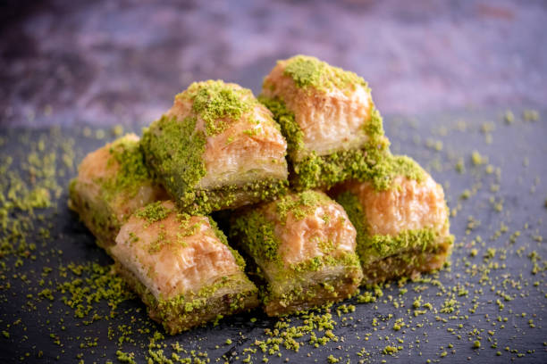

Baklava
Recipes

Description
İngredients
Nut Mixture
- 2 ½ cups walnut halves
- 1 cup shelled pistachios
- 1 ½ teaspoons ground cinnamon
- ½ teaspoon water, or as needed
Dough
- ½ cup unsalted butter, melted
- 12 sheets phyllo dough, thawed if frozen
Syrup
- 1 ½ cups sugar
- ¾ cup water
- ¼ cup honey
- 3 whole cloves
- ¼ teaspoon vanilla extract
- 1 ½ teaspoons orange flower water